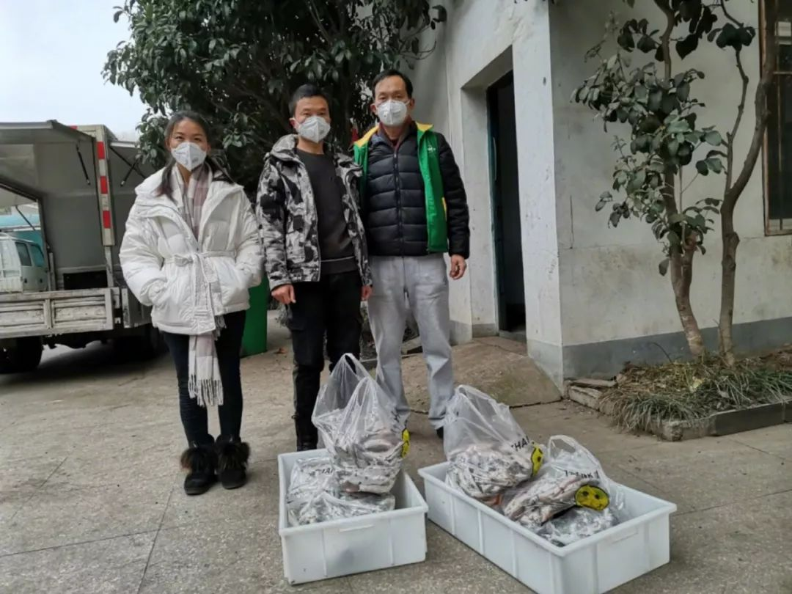
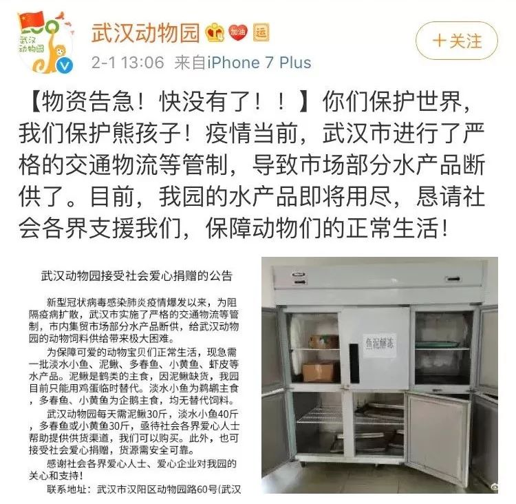
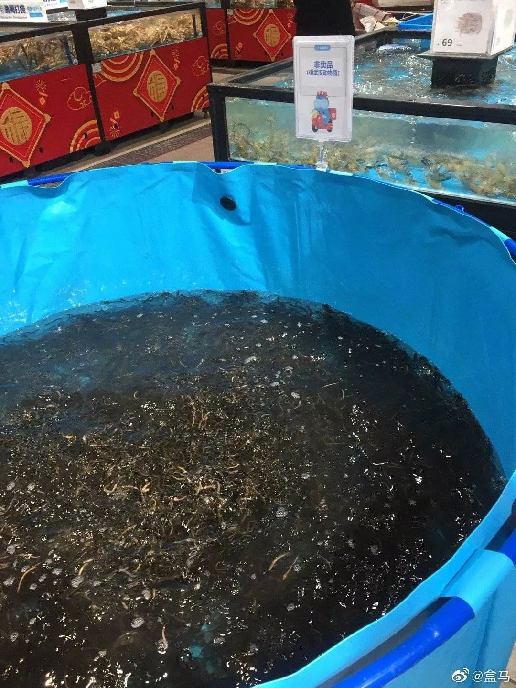

到边界拿货，货车司机组队……医疗物资如何打通武汉城
原文链接 备份链接 *************▲************* 大批量新国标标准的口罩正进入嘉兴“心脏仓” 。 （新华社/阿里巴巴供图/图） 全文共*4420*字，阅读大约需要*10*分钟。 “缺口以万为单位”，武汉市汉口医 …
2月1日，武汉动物园的一则“求助信”引起了公众的注意。民间力量一旦自发动员起来，迅速完成了资源的匹配。
记者 | 王梓辉
援救快要断粮的鹈鹕
家住武汉市汉阳地区的抖音主播刘浩昨晚很郁闷。本来下午回家的时候他还挺高兴，觉得自己刚刚做了件好事。2月1日下午三四点的时候，有粉丝询问他这边有没有鲫鱼卖。刘浩说，现在武汉都封城了，他没办法出去打鱼。粉丝解释跟他说，是离刘浩家不远的武汉动物园水产品断供了，导致动物园的动物饲料供给产生了困难，这才想问问他这边有没有鱼，想买了鱼送给动物园。
刘浩的主业就是拍摄短视频，在抖音上的ID叫“大师兄撒网”，主要拍摄的内容是他在江上撒网打鱼，因为撒网的动作潇洒，在抖音上有79万粉丝。听完粉丝的解释后，刘浩想了想，原来自家冰柜里有不少过年前准备的小鲫鱼冻在那里，这就自己开上车，装了一百多斤的冻鲫鱼送到了武汉动物园。

刘浩（中）将冻鲫鱼送到武汉动物园。| 图源@花落成蚀
武汉动物园很高兴，还专门为相关的微博点了赞。刘浩也很高兴，把自己做好事的过程拍了视频上传到抖音。没想到刘浩的父亲看到了视频，打电话跟刘浩说，那些鱼是他前两天用盐腌过后才冻起来的，动物园里的动物可能吃不了。刘浩听到后只好苦笑着给动物园打电话说：“鱼是放过盐的，你们看能吃就吃，不能吃就丢了吧。”动物园的工作人员回复说，他们也不知道动物吃不吃，得试试才知道。
要吃这些鱼的是动物园里的鹈鹕。鹈鹕是一种大型水鸟，外表最大的特征就是它那副特别长的喙，这让它很擅长捕鱼。两千多年前，《庄子·外物》中就记载：“鱼不畏网，而畏鹈鹕。”经常与武汉动物园合作的武汉本地科普作家花蚀告诉本刊，武汉动物园里有13只白鹈鹕，它们是最麻烦的，“因为它们很挑食，只吃那种小规格的鲫鱼。”
武汉动物园里的鹈鹕
2月1日下午1点，武汉动物园在微博上公开求助，称“因为武汉市进行了严格的交通物流等管制，导致市场部分水产品断供了，园内的水产品即将用尽”，这引起了社会广泛的关注。花蚀向本刊详细解释，目前受影响最大的是“三类水鸟”，分别是，鹈鹕：需食用小规格鲫鱼；鹤：需食用活泥鳅或者小规格鲫鱼；企鹅：需食用多春鱼或小黄鱼，可接受冻品，但冻太久会拒食。
武汉动物园在微博上的公开求助
这三种水鸟中，企鹅的食材在求助后已经有热心市民和网友给动物园送去了一批，暂时得到了缓解；鹤喜欢吃鲜活的小泥鳅，也可以吃淡水鱼，但它们因为是杂食的，吃谷物也可以顶一阵；只有鹈鹕比较麻烦。花蚀说，他们试过拿黑鱼切成块喂给鹈鹕，但是鹈鹕就是不吃。
“你要知道，鲜活的鱼，尤其是像鲫鱼这种，我们主要是靠本地出产的，这个和肉不能比”，花蚀告诉本刊，“肉的话，其实外地调配的肉很容易进来，但是这种小鱼就得靠附近的渔民，他们把自己捞的或者是养殖的送过来，但湖北现在受交通物流的影响很大。”
刘浩送去的一百多斤“盐鲫鱼”最终没派上用场。中国渔业协会原生水生物及水域生态专业委员会主任委员周卓诚了解到了这个情况后，主动帮武汉动物园联系上了阿里旗下的盒马生鲜超市。但盒马那边因为最近武汉封城，导致它的保障是以大众基础供应为主，像泥鳅这种之前有的货物最近就没有储备。而多春鱼这种有储备的食材也是散装的，没办法大量提供给动物园。最后协调的方案是，盒马组织调集了一些资源，在2月2日下午将200斤小泥鳅送到了武汉动物园，后期还将有500斤小鲫鱼送达。
社会力量自救
泥鳅送到后，周卓诚和花蚀这些在过程中出了力的热心人都发了微博庆祝。花蚀和盒马的工作人员都告诉本刊，动物园之前有固定的供应商，但之前的供应商自己的货运不进武汉，再加上武汉目前几乎关闭了所有的农贸生鲜市场，只留下了大型商超供居民生活所需，供应商们自己也买不到货，所以动物园现在“最需要的是能将货物运到动物园的供应商”。

在盒马组织调集下，200斤小泥鳅送达武汉动物园。| 图源@花落成蚀
刘浩说，他平时是在老家仙桃的小河里撒网打鱼，一天打个40斤鱼没问题，但现在因为交通管制，他的商务车也出不了城。周卓诚有湖北汉川那边的朋友能提供500斤的小刀鱼和小鲫鱼，但那位朋友也说，目前的问题还是运输，“要是能有运输通行证就好了。”
武汉物流协会秘书长石君告诉本刊，自从封城之后，湖北省交通运输厅只对三类车辆实行高速公路放行政策：一是运送医疗救灾物资（免通行费）；二是运送群众生活物资；三是运送保障城市运行的水、电、气等相关物资。湖北省防控指挥部交通保障组相关工作人员则在三类规定车辆下进一步向本刊解释说，他们现在的规定还有两大原则，一个是车辆必须是货运车辆，另一个则是活体家禽牲畜不能运输。因此，武汉动物园里那些需要吃活物的动物们只有靠盒马这样能特事特办的大型企业帮忙。
具体到各地市，武汉市则规定，一旦有车辆要驶出武汉市的范围，就需要武汉市防控指挥部运输保障组开具的通行证。自1月23号封城后，武汉物流协会组建了一支400多人的防疫志愿车队，他们就办理了不少张通行证。石君说，他们现在接到最多的任务就是到高速路口接收外地货车运来的物资，“因为他们的车辆进了武汉之后就不好回去了，不仅出城麻烦，回去之后很多地方都要他们自己隔离，所以我们叫他们在高速口的时候就把货卸下来，我们帮他们转运到武汉市内，并且在武汉市内做相关的配送工作。”

远征 摄
石君说，他们现在400多人的队伍还是很紧张的，“因为在武汉的司机不多，大部分司机都是住在外面的，他们没有办法回来。”在正常情况下，武汉市周边的物流货运都有物流公司负责，仅武汉物流协会下属的各类会员物流企业就有600家。但石君说，这些物流公司大部分都面临没有司机的情况，他们接到过不少到武汉周边农场拉蔬菜的任务，这些任务本来是有具体物流公司负责运送的。
特殊时刻，政府的行政力量已无法顾及到全部的需求。1月25日，武汉市发布公告，自2020年1月26日0时始，除经许可的保供运输车、免费交通车、公务用车外，中心城区区域实行机动车禁行管理；市民确有通行需求的，按指挥部第8号通告执行。此前第8号通告称：为解决市民居家出行不便等问题，武汉全市紧急征集6000台出租车，分配给中心城区，每个社区3-5台，由社区居委会统一调度使用。因为车少需求多，这种方案给武汉市很多居民的出行带来了一定困难。

远征 摄
武汉人张明义之前是一个普通的牛奶商人，只是因为有两台车，他在武汉交通管制后主动组建了一支网上志愿车队，帮忙接送一些有紧急需求的市民。有一位曾乘获得过志愿者帮助的武汉市民告诉本刊，她当时在1月26号凌晨5点到达了武昌火车站，家里人不方便来接，她先打了一下市长热线，里面先是回复说要联系一下公安看看有没有办法。但是他们后来再打的时候，里面就回复说暂时没有办法，要等一等，让他们自己也想想办法。她又给社区打电话，没有人接；给江岸区的车队打电话，碰上中心城区戒严，汉口的车队也没有办法跨长江赶到武昌来。最后还真是在微信群里看到有志愿者的留言，打通了电话，一位好心的车主开车把他们送回了家。
问起当初的想法，张明义说：“国家有难了，武汉有难了，我自己反正是单身，能出点力就出点力，就是想做点事情。”
（刘浩、张明义为化名）
作者档案

**王梓辉
**
可慢慢而归
26分钟前


三联生活周刊
个人微信：guitumanman
个人微博：汉瑟姆WANG

⊙文章版权归《三联生活周刊》所有，欢迎转发到朋友圈，转载开白请联系后台。未经同意，严禁转载至网站、APP等。
原文链接 备份链接 *************▲************* 大批量新国标标准的口罩正进入嘉兴“心脏仓” 。 （新华社/阿里巴巴供图/图） 全文共*4420*字，阅读大约需要*10*分钟。 “缺口以万为单位”，武汉市汉口医 …
原文链接 备份链接 *************▲*************（武汉红十字会官网截图/图） 全文共*3124*字，阅读大约需要7分钟。 爱心人士捐赠的物资抵达疫区之后，还要经历这样的流程：入库-理货-分类-分配-出库-运 …
原文链接 备份链接 作者 | 孙宏超 编辑 | 康晓 出品｜深网·腾讯小满工作室 欢迎下载腾讯新闻APP，阅读更多优质资讯 _编者按：_牵一发而动全身，面对疫情，需要中国全行业上下游企业携手共度难关，深网推出《共克时艰》系列报道，是为第一 …
原文链接 备份链接 国内外的口罩都在送往武汉，可武汉医院的不仅缺口罩，甚至即将用完。人民日报在其官微发问：究竟是物资紧缺还是物资分配环节存在问题？ 截止到目前，协和医院收到的物资全部来自企业和个人捐赠。物资直接对接到各地疫情指挥部或是各 …
原文链接 备份链接 非常时期，武汉成了全国人民挂念、祈福的城市。封城后，武汉人民的真实生活是什么样？ 正和岛自1月26日起特别推出《叶青：我在武汉疫区的第N天》专栏。叶青是一位定居武汉40年的市民，也是一名学者和官员。接下来的一段时间，他 …